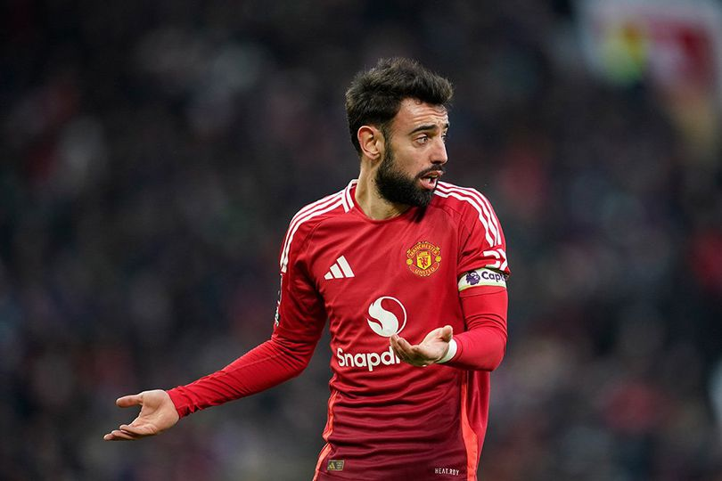

Bruno Fernandes Siap Tinggalkan MU dan Terima Tawaran Fantastis Al Hilal

Masa depan Bruno Fernandes bersama Manchester United kini tengah berada dalam ketidakpastian. Kapten Setan Merah itu dikabarkan tengah mempertimbangkan tawaran menggiurkan dari klub papan atas Arab Saudi, Al Hilal, yang siap menggelontorkan dana besar demi memboyong sang gelandang. Dilansir BBC Sport, perwakilan Fernandes diketahui telah mengadakan pertemuan dengan jajaran manajemen Al Hilal. Pertemuan tersebut disebut berlangsung positif dan membahas kemungkinan transfer Fernandes ke Saudi Pro League, kompetisi yang kini didominasi oleh Al Hilal sebagai kekuatan baru di Asia. Yang membuat rumor ini semakin menarik adalah nilai kontrak yang ditawarkan. Al Hilal dilaporkan siap memberikan kontrak berdurasi tiga tahun dengan nilai total mencapai €231 juta. Bila dihitung secara rinci, Fernandes berpotensi menerima gaji sekitar €77 juta per tahun, setara dengan €6,4 juta per bulan, €1,5 juta per pekan, atau sekitar €210 ribu setiap hari. Selain menawarkan gaji selangit untuk Fernandes, Al Hilal juga dikabarkan akan mengajukan proposal transfer sebesar £100 juta kepada Manchester United. Langkah ini memperlihatkan keseriusan mereka dalam membangun skuad bertabur bintang, sekaligus menunjukkan ambisi besar menyambut Piala Dunia Antarklub yang akan datang. Hingga kini, Fernandes belum memberikan pernyataan resmi terkait masa depannya. Meski ia tetap tampil profesional selama tur pramusim United di Asia, sikap bungkamnya soal rumor transfer membuka ruang spekulasi lebih lanjut. Menariknya, pihak Manchester United justru terlihat tenang menyikapi situasi ini. Klub belum menunjukkan sinyal akan menolak maupun menerima tawaran Al Hilal, seolah menunggu keputusan akhir dari Fernandes sendiri.